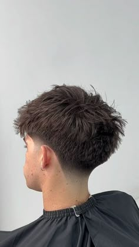
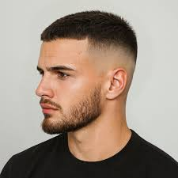
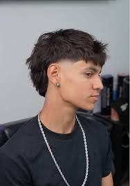
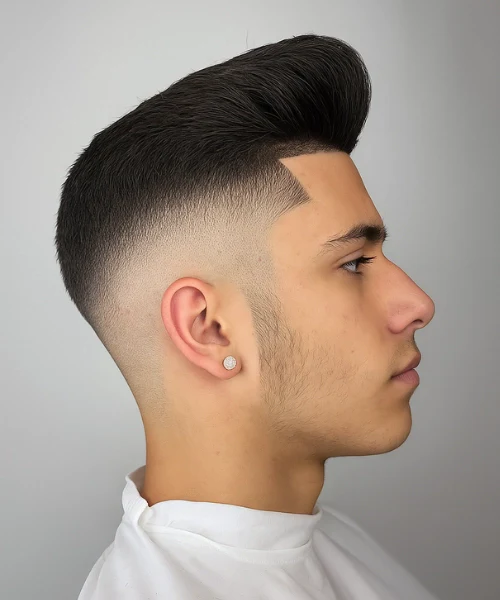
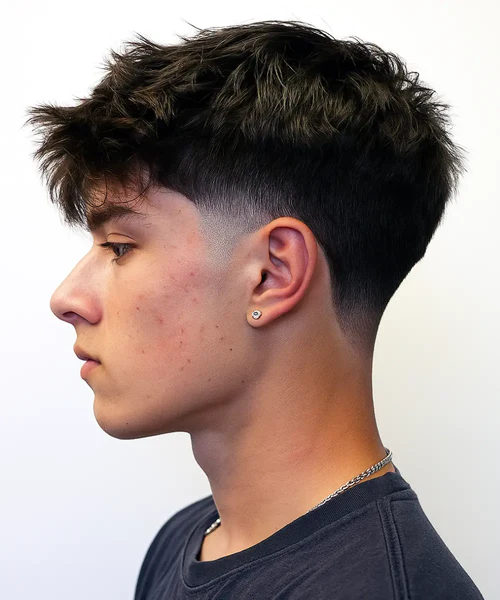
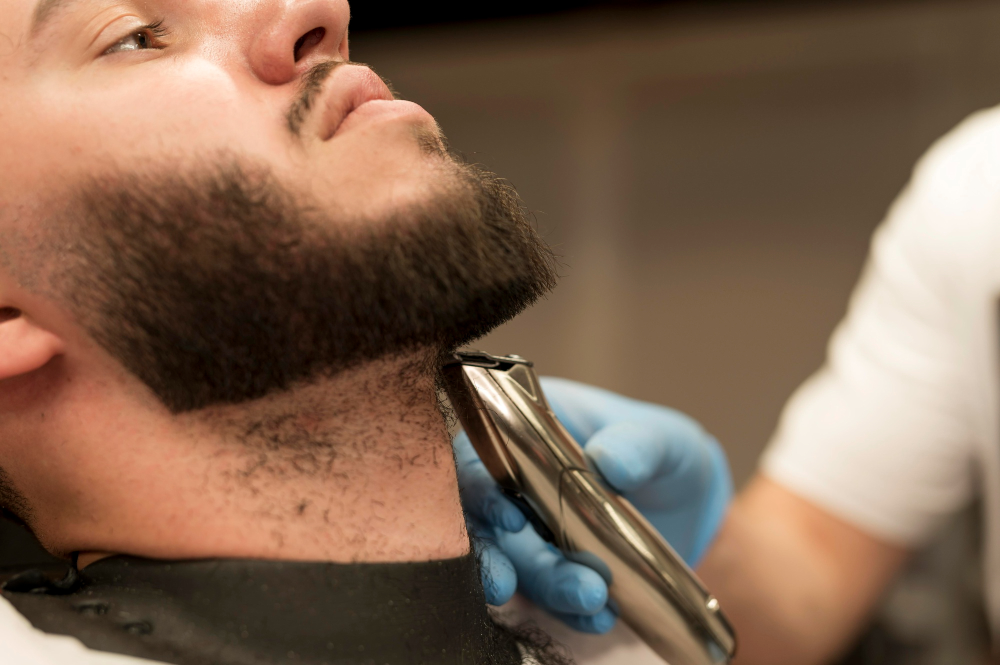
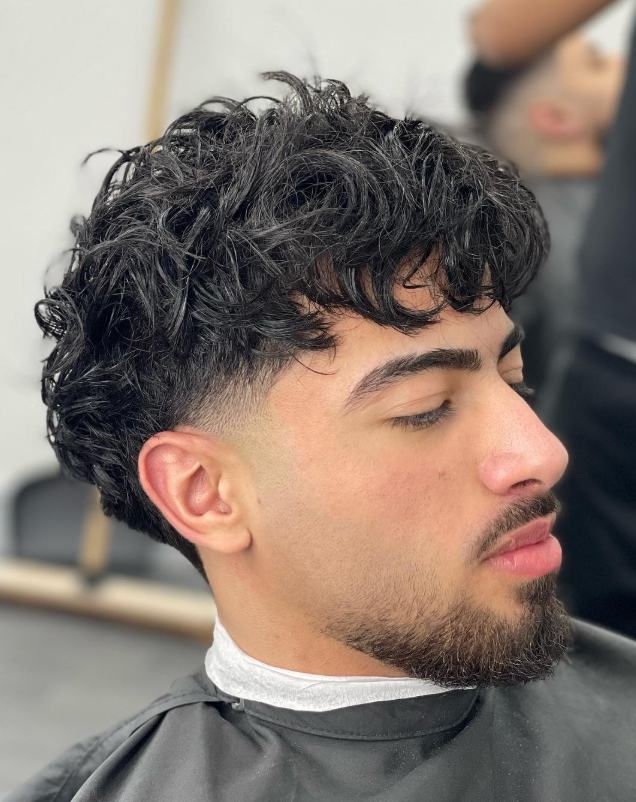
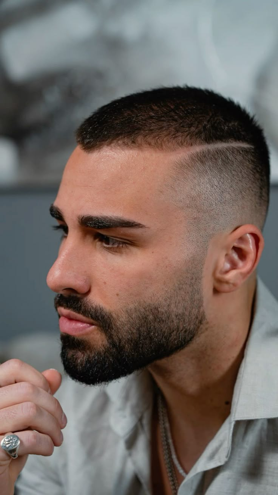
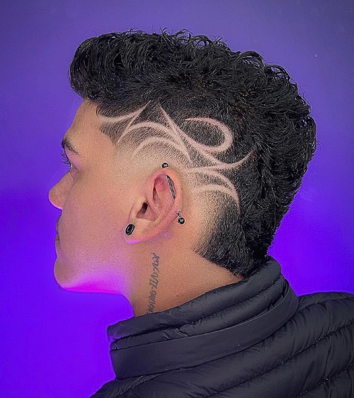

Degradado medio impecable combinado con textura pesada en la parte superior. Ideal para dar volumen y movimiento.

Degradado alto que arranca directamente desde el cero absoluto. Un look ultra limpio, fresco y muy agresivo.

Laterales muy rebajados con caída en punta y mayor longitud texturizada en la nuca. El estilo urbano del momento.
Flequillo recto y corto texturizado con un degradado comprimido en los laterales. Súper práctico y de bajo mantenimiento.

Estructura clásica y elegante con volumen superior peinado firmemente hacia atrás. Ideal para usar con pomadas de brillo.

Degradado sutil exclusivo en las patillas y la línea del cuello. Conserva la oscuridad y el largo natural en los laterales.

Diseño simétrico de líneas de mejilla y cuello con navaja libre, aplicando aceites para mantener la definición.

Conexión perfecta donde la patilla se desvanece hacia el cero y la barba va tomando volumen gradualmente hacia la barbilla.

Corte rapado uniforme al milímetro acompañado de líneas quirúrgicas paralelas o cruzadas en los laterales.

Diseños geométricos o artísticos tallados a navaja sobre el degradado. Exclusivo para quienes buscan destacar al máximo.